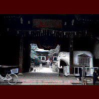

世田谷観音寺/東京都世田谷区
仁王像の鎮座する山門の向こうには正面に本堂、左右にはそれぞれ六角堂、阿弥陀堂が建ち、鬱蒼とした林に囲まれ、狭いながらも古刹然、といった雰囲気である。
ここは世田谷区下馬である。大学や高校などが密集する文教地区である。そんな一画に世田谷観音はある。
都会の中にあるこの寺は近在の住民にも親しまれているようでもあり、老若男女様々な人達が訪れては、ある者は参拝し、又ある者は境内での散歩を楽しんだりしている。境内の池の鯉は子供達の人気者だ。
で、一体この寺のどこが「珍」なのか・・・
うむ〜・・・困った。
一言で言い表せない。まあ、全体の雰囲気がなんとな〜く珍寺なのだ。
で、なんとな〜く、な点をいくつか挙げてみる。
トータルとしては先述のごとく古刹の雰囲気なのだが、この寺の開刹は昭和26年なのである。戦後である。寺としてはヒヨッ子状態なのだ。恐らく境内の建物はほとんどがその時期に建てられたと思われるのだが、たかだか50年足らずで、こんな雰囲気になるものだろうか。というかこの寺は出来た当時からこんな雰囲気だったのだろう。最初っから古刹、なのである。
そしてさらに不思議なのは境内に入ると一際目立つ参道両側にある六角堂と阿弥陀堂だ。六角堂のほうは丁度京都の六角堂に似たお堂で、六角の塔の全面に拝殿が付いたもので、内部には不動明王と八大童子が奉られているのだが、それらはいずれも国の重要文化財に指定されている。鎌倉時代の作であるとのこと。そしてその向かいの阿弥陀堂は金閣寺を模したといわれる三階建ての奇っ怪な建物で、京都二条城から移築されたものということだ。一階には阿弥陀如来、その前に仏像（十大弟子か？）が並んでいるのだが、二階、三階は雨戸が閉まっていて中の様子は窺いしれない。三階の額には「韋駄天」と書かれていたが。兎に角、何故戦後生まれの寺に重文や二条城の建物があるのか。不思議だ。
そして極め付けは本堂左奥にある「特攻観音堂」。大平洋戦争で玉砕した特攻隊の「精神と偉業を後世に伝え」つつ、御霊を奉るお堂だ。その隣には「何とか部隊の碑」や「神州不滅特別攻撃隊之碑」などもあり、特攻隊に対する熱い想いがほとばしる一画となっていて、取り澄ました古刹めいたこの寺で唯一のレアなスポットとなっている。
これらの各堂の内部が今イチ良く見えないのも排他的な感じがして、それもなんとな〜く、な雰囲気に一役買っている。六角堂の不動さまは重文だからお蔵入りも仕方ないとしても、阿弥陀堂や本堂の観音堂の内部も薄暗くてしかもあまり中に近付けないように柵などが置いてあるあたり、何か意図的なものさえ感じてしまうのだ。お陰さんで本尊の観音さまとか、マリア観音とか良く見えなかったし。
特に「特攻観音堂」は名前からして「特攻観音」なるものでも奉られているのかと思い、期待して中を覗いたのだが、厨子の中に入っており、余計想像力を膨らませちゃったぞ。特攻服で戦闘機に乗ってる観音さんとか。厨子の前に供えられているのがGIジョ−の日本兵ヴァ−ジョンだったようにも見えた故。
ま、以上、挙げた点を総合すると、どうやら新参者の寺がハクを付けるために様々なモノをあちこちから持ってきて、古刹に仕立て上げた姿が浮かび上がってくるのだが、本当のところは分からない。もしかしたらどこかの由緒あるお寺が建物や本尊ごと移転してきただけなのかもしれない。それとも特攻観音を奉るためにつくられた寺なのかも・・・真実を知りたいような、知らずに妄想を温めていたいような気分である。
なんといっても創建者が元実業家（＆夢のお告げ）であるところが怪しい。
これらのなんとな〜く、な点プラス私の妄想で合わせ技一本、で、この寺を珍寺としたい。
1998.5.
珍寺大道場 HOME